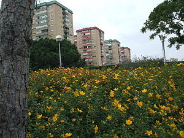
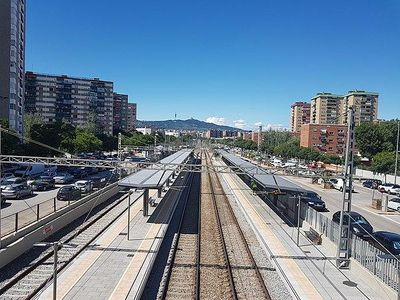
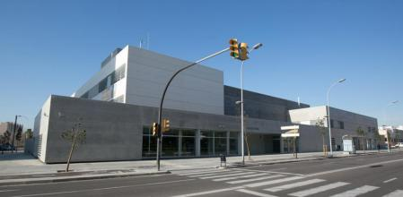
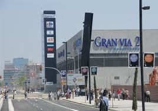
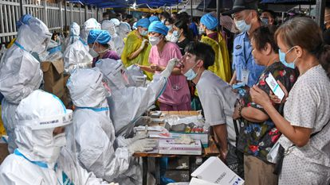

El Gornal es un barrio de Hospitalet de Llobregat, en el área metropolitana de Barcelona, España. Está clasificado territorialmente dentro del Distrito VI, juntamente con Bellvitge.
Limita con los barrios de Bellvitge por la avenida de Vilanova, Santa Eulalia por las calles de Amadeu Torner y de la Aprestadora y Granvia Sud por avenida de la Granvia de Hospitalet. Es un lugar con avenidas anchas y grandes zonas verdes. Está situado a un par de kilómetros de Barcelona.
El Estacion tren es la line donde separa el gornal del Bellvitge. El estacion tiene puentes por arriba para poder pasar.
Hay un Polideportivo alado de la linea L9 en Gornal donde puedes hacer ejerciocios y nataciones
No es un centro comercial que es de Gornal pero esta cerca y se puede ir a comprar las cosas que necesitas en tu vida cotidiana
Coronavirus Los Coronavirus son un género de virus ARN de vertebrados de Coronaviridae. Son virus envueltos con un genoma de ARN de cadena sencilla con polaridad positiva y simetría helicoidal. El nombre coronavirus deriva de la apariencia de la envoltura bajo el microscopio electrónico de estar coronado con un anillo de estructuras redondeadas. Esta morfología está formada por proyecciones (peplómeros) de la envoltura, que son proteínas que salen de la superficie del virus y le determina el tropismo por su hospedador. Los síntomas descritos para la neumonía de Wuhan provocada por el nuevo coronavirus son fiebre y fatiga, acompañados de tos seca y, en muchos casos, de disnea (dificultad para respirar). Puede transmitirse de persona a persona.
El coronavirus continua elevadisimo en Catalunya, hay un total de 2816 personas ingresadas con covid en los hospitales catalanes, además Salut ha declarado 13533 nuevos casos de covid confirmados por PCR y han muerto 40 personas en las ultimas horas.
